Generated: 2026-07-11 11:41:08
Total Parameters: 47 | Groups: joint
Estimation Results Source: outputs\trial_singles2016\estimation_results_trial_singles2016.json
| Specification | joint_pooled_v1_bll0_tlmpin |
|---|---|
| Specification File | scripts\bpool\specs\estimation_spec_joint_pooled_v1_bll0_tlmpin.yaml |
| Model Family | regular |
| Opportunity Centering | Enabled |
| Solver | notebook trial (warm->fit) (family: other) |
|---|---|
| Objective (log-likelihood) | -3793.2534 |
| Wall time (s) | — |
| Per-group convergence: | |
| group | success | message | iters | nfev | grad_norm | wall(s) |
|---|---|---|---|---|---|---|
| joint | True | notebook trial fit (singles-only; couples+year params pinned at certified) | — | — | — | — |
| Log-likelihood | -3793.2534 |
|---|---|
| Observations (rows) | 1555 |
| Choice sets / groups | 1555 |
| Alternatives per choice set | 1.00 |
| Free parameters | 47 |
| Fixed parameters | 0 |
| AIC | 7680.5069 |
| BIC | 7931.9207 |
| AIC / n_obs | 4.939233 |
| ll_null (uniform) | -7161.0396 |
|---|---|
| ll_null (prior-corrected) | -8473.1288 |
| ρ² (uniform) | 0.4703 |
| ρ² (prior-corrected) | 0.5523 |
| Adj. ρ² (uniform) | 0.4637 |
| Adj. ρ² (prior-corrected) | 0.5468 |
ρ² values use McFadden's formulation 1 - LL/LL0. For sampled-alternative / job-choice models the prior-corrected null is the right comparison; the uniform null is kept for legacy comparability.
| Parameters (total) | 47 |
|---|---|
| Free parameters | 47 |
| Fixed parameters | 0 |
| Parameters with bounds | 0 |
| At lower bound | 0 |
| At upper bound | 0 |
These are not model-fit statistics. They check whether estimated preferences are economically sensible.
| negative_muc_count | 0.0000e+00 |
|---|---|
| negative_muc_pct | 0.0000e+00 |
| negative_mul_count | 0.0000e+00 |
| negative_mul_pct | 0.0000e+00 |
This is the legacy "kitchen-sink" table preserved for backward compatibility. The four reorganized sections above (A–D) are the canonical view. This table mixes core fit, null-model, bound and economic-sanity values; prefer the sections above for adoption decisions.
| log_likelihood | -3793.2534 |
|---|---|
| n_observations | 1555.0000 |
| n_groups | 1555.0000 |
| n_parameters | 47.0000 |
| AIC | 7680.5069 |
| BIC | 7931.9207 |
| ll_null | -7161.0396 |
| ll_null_uniform | -7161.0396 |
| ll_null_prior_corrected | -8473.1288 |
| n_obs_long | 1.5550e+05 |
| rho_squared_uniform | 0.4703 |
| rho_squared_adj_uniform | 0.4637 |
| rho_squared_prior_corrected | 0.5523 |
| rho_squared_adj_prior_corrected | 0.5468 |
| rho_squared | 0.5523 |
| rho_squared_adj | 0.5468 |
| AIC_per_obs | 4.9392 |
| n_negative_muc_total | 0.0000e+00 |
| n_negative_mul_total | 0.0000e+00 |
| pct_negative_muc_total | 0.0000e+00 |
| pct_negative_mul_total | 0.0000e+00 |
| n_bounded_params | 0 |
| n_hit_lower_bound | 0 |
| n_hit_upper_bound | 0 |
Not available: Hessian diagnostics not present in results JSON or cluster-SE JSON.
Utility and opportunity functions for each demographic group, shown in both symbolic and numerical form.
U is the utility of consumption and leisure; the O· terms
are opportunity-density contributions (employment/hours, wage,
occupation); log prior rescales each alternative
to the data-generating measure. The terms displayed reflect the
opportunity blocks declared in the active YAML specification.
Working-gated employment and hours intercepts. Combines
hours_opportunity.shifters (base employment intercept and
PT/FT focal-point indicators) with
market_opportunity.shifters (working-gated residual market
access terms like gsur, education).
Log-normal wage opportunity:
log(wage) = μw(X) + ε,
ε ~ N(0, σ²). The mean μw is built from
wage_opportunity.mean_shifters.
Working-gated occupation shifters. Each applies_to
group has its own coefficient set on the non-reference categories of
loc4. Reference category: loc4 = 1.
applies_to = male)applies_to = female)These are not true labor supply elasticities. They are heuristic approximations derived from the curvature parameters (θ) of the Box-Cox utility function. The Hicksian approximation is (1 - θ_l), which measures the curvature of preferences. For rigorous elasticity estimates, use simulation-based methods that account for the full discrete choice structure and budget constraints.
| Group | Hicksian (compensated) | Marshallian (uncompensated) | Participation (extensive) | Intensive (conditional) | θ_l | θ_c | β_l (at median X) | β_c |
|---|---|---|---|---|---|---|---|---|
| Single Males | 3.394 | 3.294 | 1.018 | 2.376 | -2.394 | -0.077 | 4.798 | 1.000 |
| Single Females | 3.113 | 3.013 | 0.934 | 2.179 | -2.113 | -0.077 | 8.131 | 1.000 |
| Males in Couples | 0.500 | 0.400 | 0.150 | 0.350 | 0.500 | -0.077 | 0.000 | 1.000 |
| Females in Couples | 3.132 | 3.032 | 0.940 | 2.192 | -2.132 | -0.077 | 10.052 | 1.000 |
| Group | Obs. Participation | Pred. Participation | Obs. Mean Hours | Pred. Mean Hours |
|---|---|---|---|---|
| Single Males | 86.1% | 92.2% | 39.4 | 36.1 |
| Single Females | 87.2% | 87.4% | 36.3 | 35.5 |
Analysis at chosen alternatives. Negative values indicate potential specification issues.
| Group | N Individuals | % Neg MUC | % Neg MUL | MUC Mean | MUL Mean | |||||
|---|---|---|---|---|---|---|---|---|---|---|
| Single Males | 841 | 0.00% | 0.00% | 0.0248 | 3.0854e-05 | |||||
| Single Females | 714 | 0.00% | 0.00% | 0.0302 | 1.8137e-04 |
| Group | β_c | θ_c | MUC Positive? | MUC Diminishing? | Well-Behaved? | MUC at Median C | C where MUC=1 | Notes |
|---|---|---|---|---|---|---|---|---|
| Single Males | 1.0000 | 0.5000 | ✓ | ✓ | ✓ | 1.0000 | 1.0000 | |
| Single Females | 1.0000 | 0.5000 | ✓ | ✓ | ✓ | 1.0000 | 1.0000 | |
| Males in Couples | 1.0000 | 0.0000 | ✓ | ✓ | ✓ | 1.0000 | 1.0000 | |
| Females in Couples | 1.0000 | 0.0000 | ✓ | ✓ | ✓ | 1.0000 | 1.0000 |
| Max |Σp - 1| | 0.000000 |
| Mean |Σp - 1| | 0.000000 |
| % HH off by >0.01 | 0.00% |
| % HH off by >0.001 | 0.00% |
| Min | 0.0000 |
| 10th percentile | 0.0074 |
| 25th percentile | 0.0368 |
| Median | 0.1016 |
| Mean | 0.1400 |
| 75th percentile | 0.1862 |
| 90th percentile | 0.3624 |
| Max | 0.8319 |
| max_error | 4.440892e-16 |
|---|---|
| mean_error | 1.033114e-16 |
| pct_off_by_0.01 | 0.000000 |
| pct_off_by_0.001 | 0.000000 |
| min | 5.655277e-09 |
|---|---|
| max | 0.831857 |
| mean | 0.139967 |
| median | 0.101598 |
| q10 | 0.007416 |
| q25 | 0.036837 |
| q75 | 0.186215 |
| q90 | 0.362418 |
| # | idhh | group | p_chosen | ll_i |
|---|---|---|---|---|
| 1 | 3600001 | sf | 5.655277e-09 | -18.9907 |
| 2 | 1918802 | sf | 5.535051e-08 | -16.7096 |
| 3 | 3457500 | sm | 1.066498e-07 | -16.0537 |
| 4 | 3408700 | sm | 2.231630e-05 | -10.7102 |
| 5 | 2191400 | sm | 4.190094e-05 | -10.0802 |
| 6 | 3382800 | sm | 6.431675e-05 | -9.6517 |
| 7 | 3317202 | sf | 6.936255e-05 | -9.5762 |
| 8 | 4288000 | sm | 7.233865e-05 | -9.5342 |
| 9 | 3864601 | sm | 8.087879e-05 | -9.4226 |
| 10 | 3090000 | sf | 8.484373e-05 | -9.3747 |
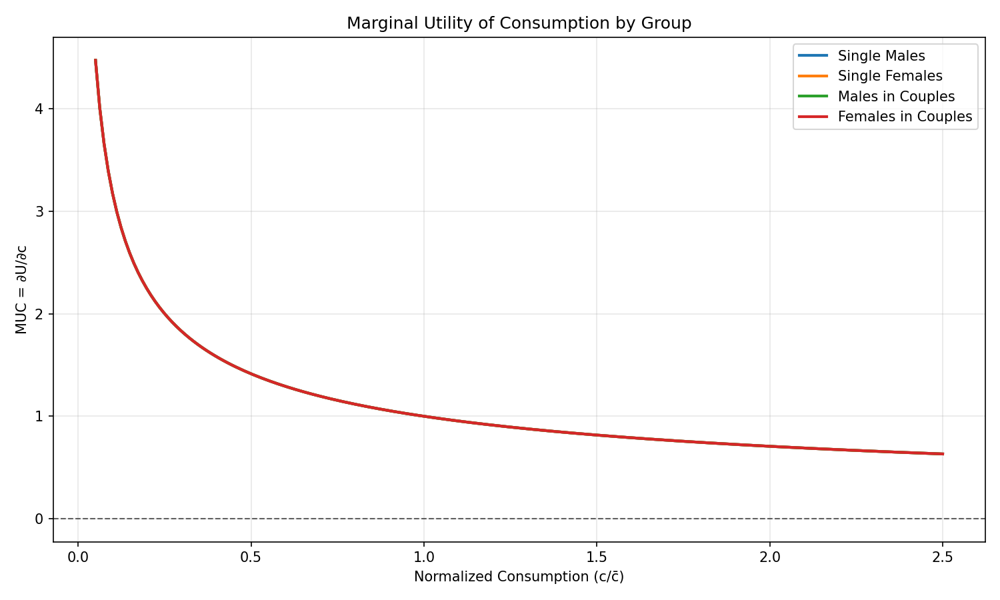
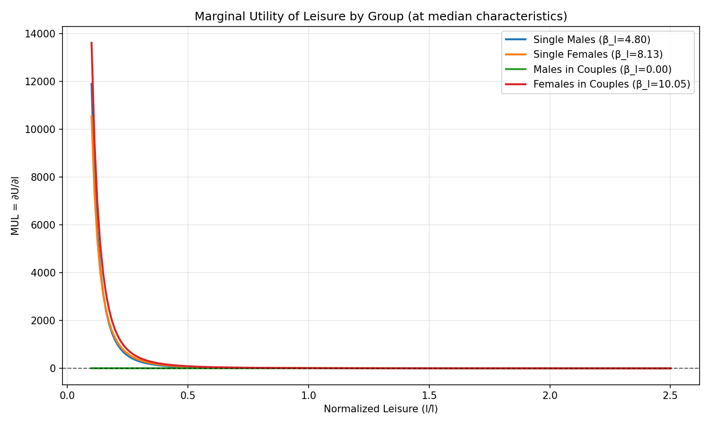
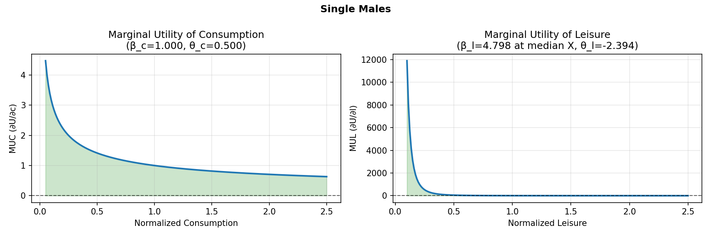
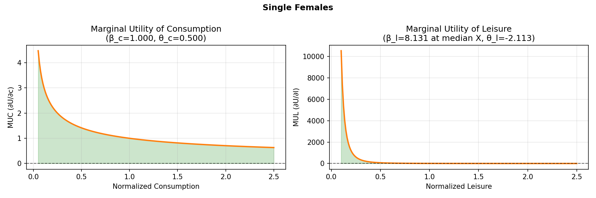
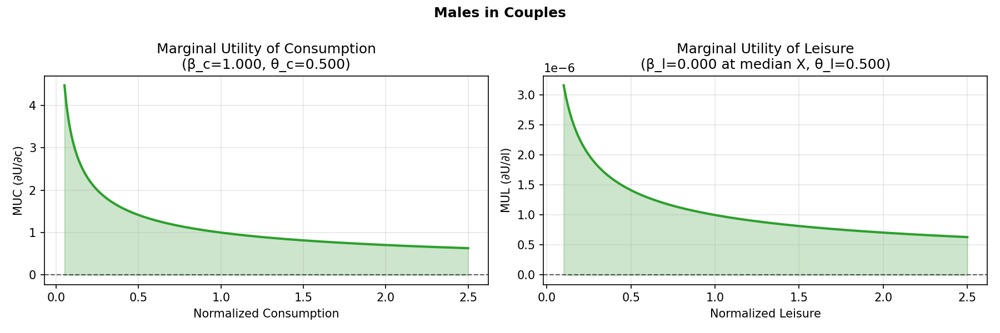
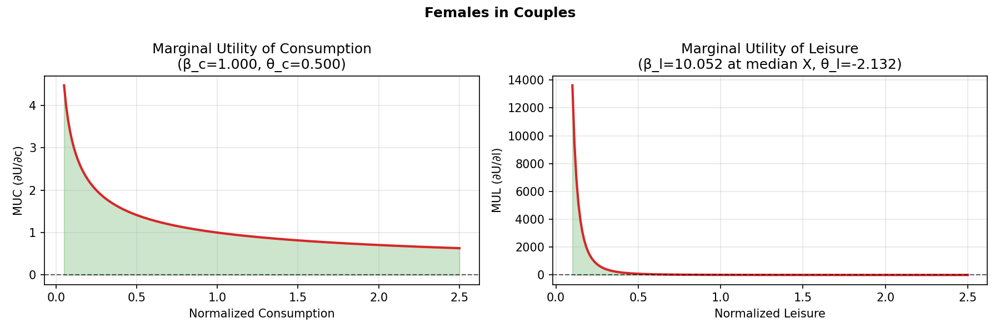
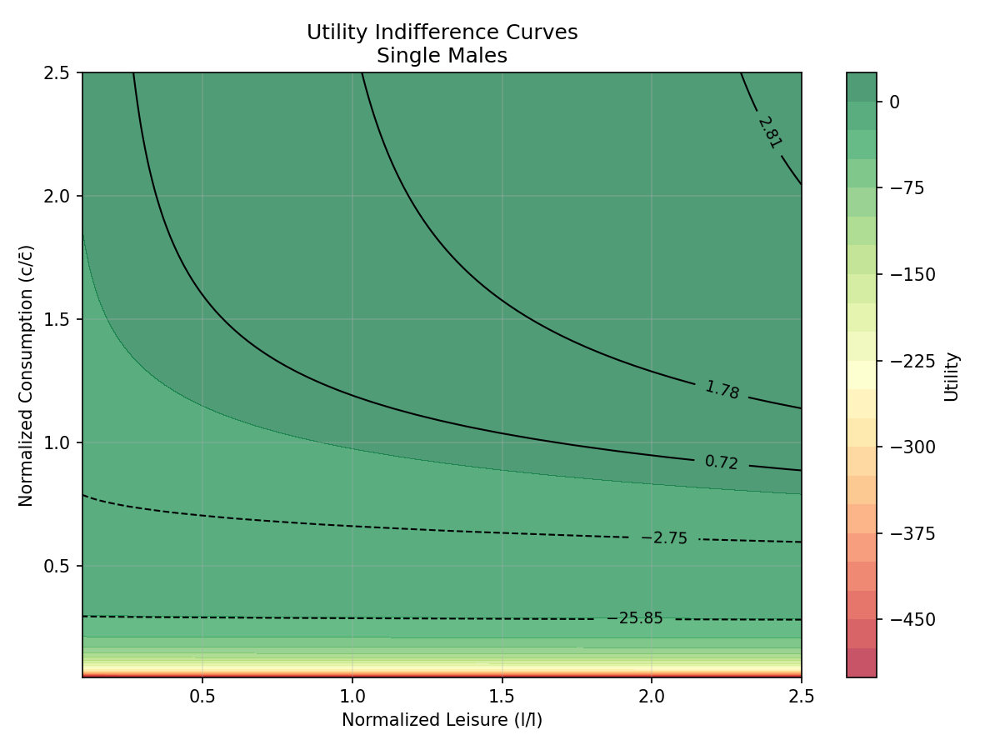
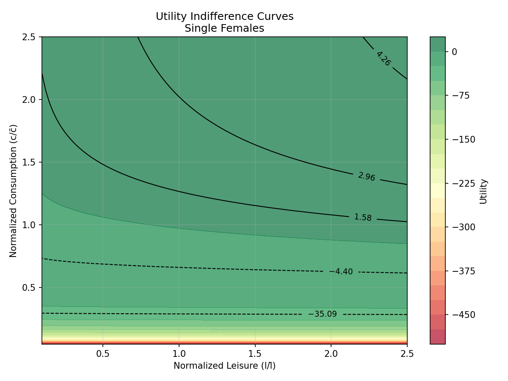
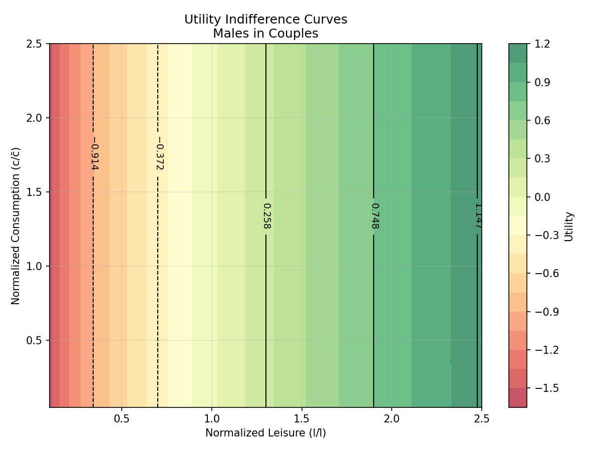
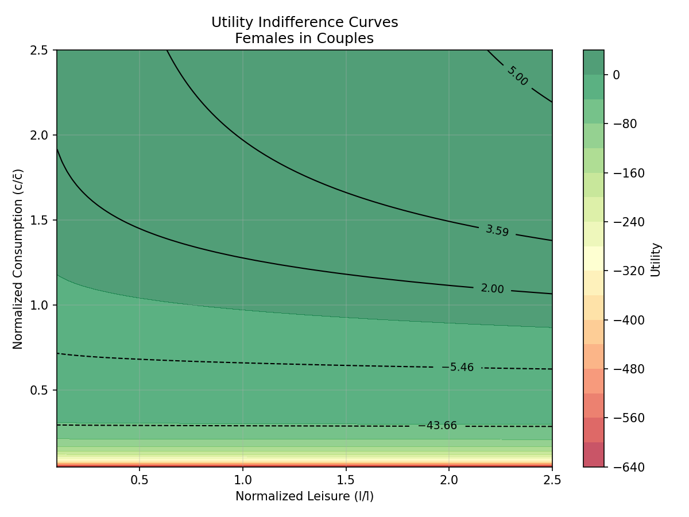
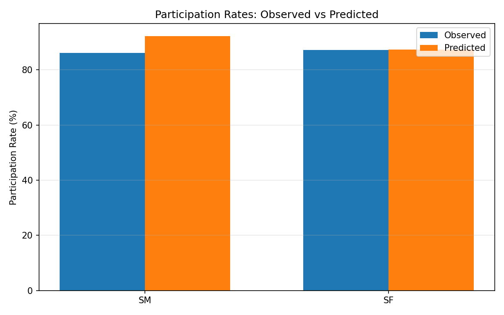
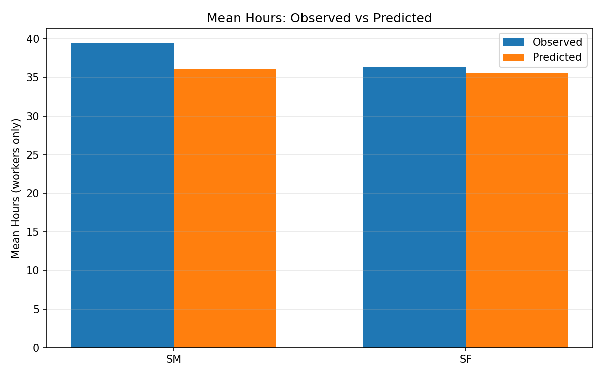
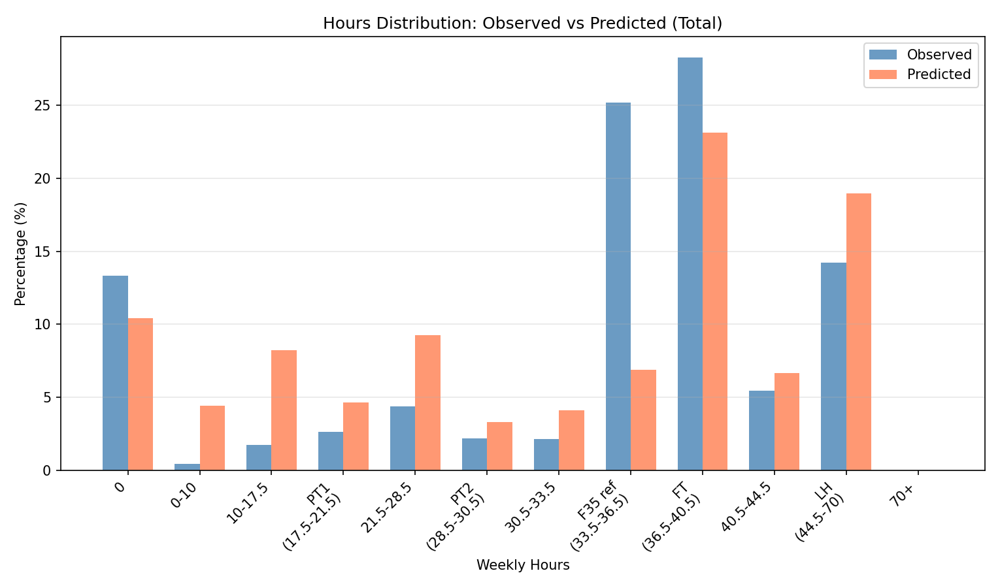
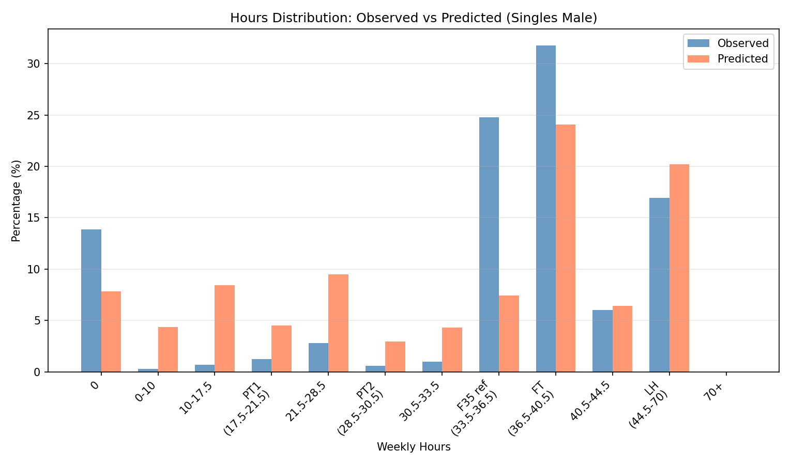
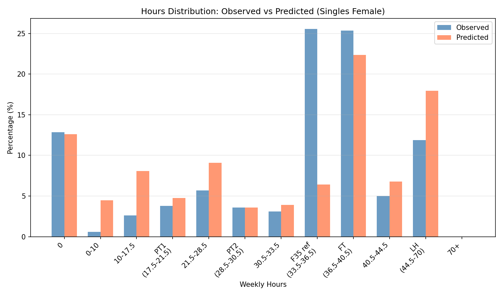
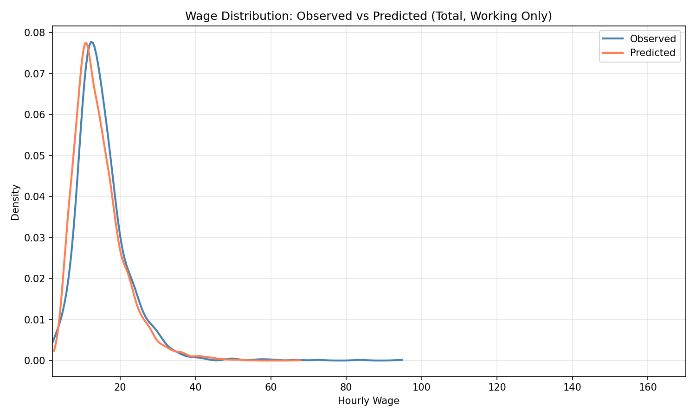
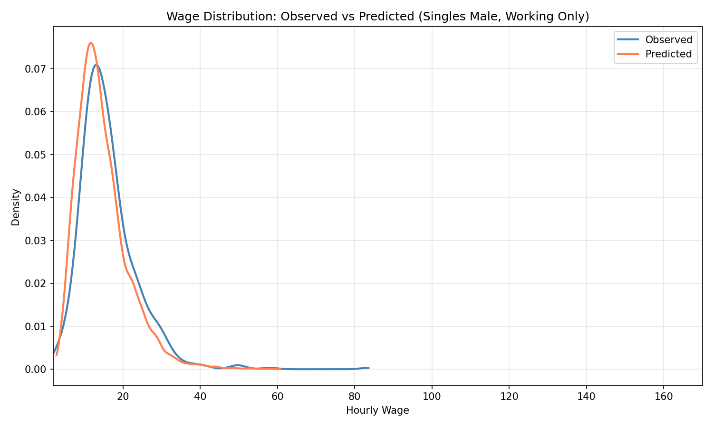
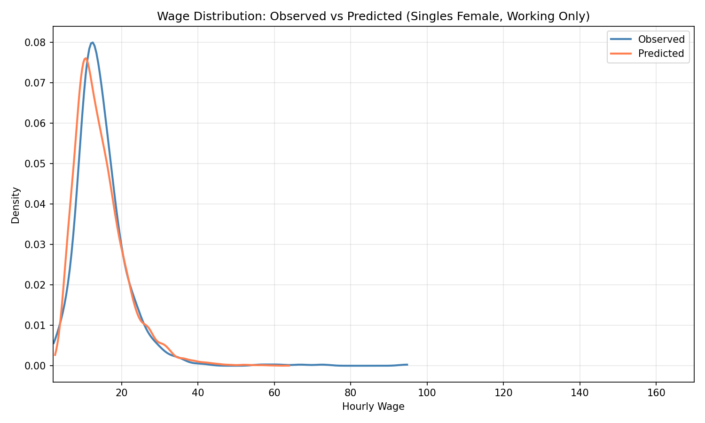
| beta_E | -1.7286 |
| beta_E_drgmd | 0.0358 |
| beta_E_drgn2 | -0.3224 |
| beta_E_drgn3 | -0.1967 |
| beta_E_drgn4 | -0.8331 |
| beta_E_drgn5 | -0.4062 |
| beta_E_drgn6 | -0.5846 |
| beta_E_drgn7 | -0.4151 |
| beta_E_drgn8 | -0.4418 |
| beta_E_drgur | 0.0035 |
| beta_E_gsur | -1.0490 |
| beta_E_y2015 | -0.2546 |
| beta_E_y2017 | -0.0695 |
| beta_h_ft | 1.3589 |
| beta_h_lh | -0.8988 |
| beta_h_pt1 | -0.1636 |
| beta_h_pt2 | 0.1805 |
| beta_l0 | 4.7980 |
| beta_l_age | 0.3715 |
| beta_l_age2 | 1.0000 |
| beta_w0 | 2.1368 |
| beta_w_educH | 0.3237 |
| beta_w_educL | 0.0183 |
| beta_w_pexp | 0.2278 |
| beta_w_pexp2 | -0.0118 |
| sigma | 0.4197 |
| theta_c_singles | -0.0771 |
| theta_l | -2.3942 |
| beta_E | -1.7286 |
| beta_E_drgmd | 0.0358 |
| beta_E_drgn2 | -0.3224 |
| beta_E_drgn3 | -0.1967 |
| beta_E_drgn4 | -0.8331 |
| beta_E_drgn5 | -0.4062 |
| beta_E_drgn6 | -0.5846 |
| beta_E_drgn7 | -0.4151 |
| beta_E_drgn8 | -0.4418 |
| beta_E_drgur | 0.0035 |
| beta_E_gsur | -1.0490 |
| beta_E_y2015 | -0.2546 |
| beta_E_y2017 | -0.0695 |
| beta_h_ft | 1.3589 |
| beta_h_lh | -0.8988 |
| beta_h_pt1 | -0.1636 |
| beta_h_pt2 | 0.1805 |
| beta_l0 | 8.1310 |
| beta_l_age | -0.9262 |
| beta_l_age2 | 1.0000 |
| beta_l_nkids | 1.4036 |
| beta_w0 | 2.1368 |
| beta_w_educH | 0.3237 |
| beta_w_educL | 0.0183 |
| beta_w_pexp | 0.2278 |
| beta_w_pexp2 | -0.0118 |
| sigma | 0.4197 |
| theta_c_singles | -0.0771 |
| theta_l | -2.1126 |
| beta_E | -1.7286 |
| beta_E_drgmd | 0.0358 |
| beta_E_drgn2 | -0.3224 |
| beta_E_drgn3 | -0.1967 |
| beta_E_drgn4 | -0.8331 |
| beta_E_drgn5 | -0.4062 |
| beta_E_drgn6 | -0.5846 |
| beta_E_drgn7 | -0.4151 |
| beta_E_drgn8 | -0.4418 |
| beta_E_drgur | 0.0035 |
| beta_E_gsur | -1.0490 |
| beta_E_y2015 | -0.2546 |
| beta_E_y2017 | -0.0695 |
| beta_h_ft | 1.3589 |
| beta_h_lh | -0.8988 |
| beta_h_pt1 | -0.1636 |
| beta_h_pt2 | 0.1805 |
| beta_l0 | 0.0000 |
| beta_l_age | -0.0672 |
| beta_l_age2 | 0.0878 |
| beta_occ_2 | -1.5916 |
| beta_occ_3 | -2.2941 |
| beta_occ_4 | 0.2906 |
| beta_w0 | 2.1368 |
| beta_w_educH | 0.3237 |
| beta_w_educL | 0.0183 |
| beta_w_pexp | 0.2278 |
| beta_w_pexp2 | -0.0118 |
| sigma | 0.4197 |
| theta_c_singles | -0.0771 |
| beta_E | -1.7286 |
| beta_E_drgmd | 0.0358 |
| beta_E_drgn2 | -0.3224 |
| beta_E_drgn3 | -0.1967 |
| beta_E_drgn4 | -0.8331 |
| beta_E_drgn5 | -0.4062 |
| beta_E_drgn6 | -0.5846 |
| beta_E_drgn7 | -0.4151 |
| beta_E_drgn8 | -0.4418 |
| beta_E_drgur | 0.0035 |
| beta_E_gsur | -1.0490 |
| beta_E_y2015 | -0.2546 |
| beta_E_y2017 | -0.0695 |
| beta_h_ft | 1.3589 |
| beta_h_lh | -0.8988 |
| beta_h_pt1 | -0.1636 |
| beta_h_pt2 | 0.1805 |
| beta_l0 | 10.0522 |
| beta_l_age | -1.7803 |
| beta_l_age2 | 1.0000 |
| beta_l_nkids | 0.5857 |
| beta_occ_2 | -0.0476 |
| beta_occ_3 | -0.4729 |
| beta_occ_4 | 0.7718 |
| beta_w0 | 2.1368 |
| beta_w_educH | 0.3237 |
| beta_w_educL | 0.0183 |
| beta_w_pexp | 0.2278 |
| beta_w_pexp2 | -0.0118 |
| sigma | 0.4197 |
| theta_c_singles | -0.0771 |
| theta_l | -2.1317 |
Primary SE: Hessian (classical) (supply --cluster-se-json for cluster-robust SE)
Primary SE is robust/cluster when cluster SEs are supplied by --cluster-se-json or embedded in results JSON; otherwise the Hessian (classical) SE is primary.
| parameter | estimate | se_hessian | t_hessian | se_robust | t_robust | p_robust | fixed | at_lower | at_upper | primary_se |
|---|---|---|---|---|---|---|---|---|---|---|
| joint.beta_l0_sf | 8.131043 | — | — | — | — | — | none | |||
| joint.beta_l_age_sf | -0.926186 | — | — | — | — | — | none | |||
| joint.theta_l_sf | -2.112586 | — | — | — | — | — | none | |||
| joint.beta_l_age2_sm | 1.000000 | — | — | — | — | — | none | |||
| joint.theta_l_sm | -2.394220 | — | — | — | — | — | none | |||
| joint.beta_l_nkids_sf | 1.403648 | — | — | — | — | — | none | |||
| joint.beta_l_age_sm | 0.371503 | — | — | — | — | — | none | |||
| joint.beta_l0_sm | 4.797967 | — | — | — | — | — | none | |||
| joint.theta_c_singles | -0.077066 | — | — | — | — | — | none | |||
| joint.beta_l_age2_sf | 1.000000 | — | — | — | — | — | none | |||
| joint.beta_l_age_f | -1.780253 | — | — | — | — | — | none | |||
| joint.beta_l0_f | 10.052237 | — | — | — | — | — | none | |||
| joint.beta_l_age2_m | 0.087750 | — | — | — | — | — | none | |||
| joint.beta_l_age_m | -0.067237 | — | — | — | — | — | none | |||
| joint.beta_l0_m | 1.000000e-06 | — | — | — | — | — | none | |||
| joint.beta_l_age2_f | 1.000000 | — | — | — | — | — | none | |||
| joint.beta_l_nkids_f | 0.585720 | — | — | — | — | — | none | |||
| joint.theta_l_f | -2.131739 | — | — | — | — | — | none |
| parameter | estimate | se_hessian | t_hessian | se_robust | t_robust | p_robust | fixed | at_lower | at_upper | primary_se |
|---|---|---|---|---|---|---|---|---|---|---|
| joint.beta_h_pt1 | -0.163627 | — | — | — | — | — | none | |||
| joint.beta_E_drgn4 | -0.833082 | — | — | — | — | — | none | |||
| joint.beta_E_drgmd | 0.035828 | — | — | — | — | — | none | |||
| joint.beta_E_drgn6 | -0.584638 | — | — | — | — | — | none | |||
| joint.beta_E_drgur | 0.003493 | — | — | — | — | — | none | |||
| joint.beta_h_lh | -0.898762 | — | — | — | — | — | none | |||
| joint.beta_h_ft | 1.358901 | — | — | — | — | — | none | |||
| joint.beta_h_pt2 | 0.180457 | — | — | — | — | — | none | |||
| joint.beta_E_drgn5 | -0.406234 | — | — | — | — | — | none | |||
| joint.beta_E_gsur | -1.049013 | — | — | — | — | — | none | |||
| joint.beta_E_drgn2 | -0.322390 | — | — | — | — | — | none | |||
| joint.beta_E_drgn7 | -0.415141 | — | — | — | — | — | none | |||
| joint.beta_E_drgn3 | -0.196739 | — | — | — | — | — | none | |||
| joint.beta_E_drgn8 | -0.441751 | — | — | — | — | — | none | |||
| joint.beta_E_y2015 | -0.254606 | — | — | — | — | — | none | |||
| joint.beta_E_y2017 | -0.069471 | — | — | — | — | — | none |
| parameter | estimate | se_hessian | t_hessian | se_robust | t_robust | p_robust | fixed | at_lower | at_upper | primary_se |
|---|---|---|---|---|---|---|---|---|---|---|
| joint.beta_w_pexp | 0.227842 | — | — | — | — | — | none | |||
| joint.beta_w_educL | 0.018288 | — | — | — | — | — | none | |||
| joint.beta_w_pexp2 | -0.011783 | — | — | — | — | — | none | |||
| joint.beta_w0 | 2.136759 | — | — | — | — | — | none | |||
| joint.sigma | 0.419664 | — | — | — | — | — | none | |||
| joint.beta_w_educH | 0.323747 | — | — | — | — | — | none |
| parameter | estimate | se_hessian | t_hessian | se_robust | t_robust | p_robust | fixed | at_lower | at_upper | primary_se |
|---|---|---|---|---|---|---|---|---|---|---|
| joint.beta_occ_2_f | -0.047581 | — | — | — | — | — | none | |||
| joint.beta_occ_4_m | 0.290643 | — | — | — | — | — | none | |||
| joint.beta_occ_3_m | -2.294101 | — | — | — | — | — | none | |||
| joint.beta_occ_2_m | -1.591649 | — | — | — | — | — | none | |||
| joint.beta_occ_3_f | -0.472919 | — | — | — | — | — | none | |||
| joint.beta_occ_4_f | 0.771794 | — | — | — | — | — | none |
| parameter | estimate | se_hessian | t_hessian | se_robust | t_robust | p_robust | fixed | at_lower | at_upper | primary_se |
|---|---|---|---|---|---|---|---|---|---|---|
| joint.beta_E | -1.728606 | — | — | — | — | — | none |
Significance: *** p<0.001, ** p<0.01, * p<0.05. The bundle-driven block view above is the canonical Phase-2 source.
Parameters determining the utility from consumption (β_c, θ_c) and leisure (β_l*, θ_l) by demographic group.
| Parameter | Estimate | Std Error | t-value | p-value | Lower Bound | Upper Bound | Initial Value |
|---|---|---|---|---|---|---|---|
| joint.beta_l0_sf | 8.1310 | N/A | N/A | N/A | — | — | 3.7285 |
| joint.beta_l_age_sf | -0.9262 | N/A | N/A | N/A | — | — | 0.4986 |
| joint.theta_l_sf | -2.1126 | N/A | N/A | N/A | — | — | -1.3491 |
| joint.beta_l_age2_sm | 1.0000 | N/A | N/A | N/A | — | — | 0.3819 |
| joint.theta_l_sm | -2.3942 | N/A | N/A | N/A | — | — | -1.8616 |
| joint.beta_l_nkids_sf | 1.4036 | N/A | N/A | N/A | — | — | 1.7395 |
| joint.beta_l_age_sm | 0.3715 | N/A | N/A | N/A | — | — | 0.6775 |
| joint.beta_l0_sm | 4.7980 | N/A | N/A | N/A | — | — | 4.5487 |
| joint.theta_c_singles | -0.0771 | N/A | N/A | N/A | — | — | 0.0076 |
| joint.beta_l_age2_sf | 1.0000 | N/A | N/A | N/A | — | — | 1.0000 |
| joint.beta_l_age_f | -1.7803 | N/A | N/A | N/A | — | — | N/A |
| joint.beta_l0_f | 10.0522 | N/A | N/A | N/A | — | — | N/A |
| joint.beta_l_age2_m | 0.0878 | N/A | N/A | N/A | — | — | N/A |
| joint.beta_l_age_m | -0.0672 | N/A | N/A | N/A | — | — | N/A |
| joint.beta_l0_m | 0.0000 | N/A | N/A | N/A | — | — | N/A |
| joint.beta_l_age2_f | 1.0000 | N/A | N/A | N/A | — | — | N/A |
| joint.beta_l_nkids_f | 0.5857 | N/A | N/A | N/A | — | — | N/A |
| joint.theta_l_f | -2.1317 | N/A | N/A | N/A | — | — | N/A |
Working-gated employment intercept and hours focal-point indicators, plus residual market-access shifters (gsur, education) declared in market_opportunity.shifters.
| Parameter | Estimate | Std Error | t-value | p-value | Lower Bound | Upper Bound | Initial Value |
|---|---|---|---|---|---|---|---|
| joint.beta_h_pt1 | -0.1636 | N/A | N/A | N/A | — | — | -1.4333 |
| joint.beta_E | -1.7286 | N/A | N/A | N/A | — | — | -0.7527 |
| joint.beta_E_drgn4 | -0.8331 | N/A | N/A | N/A | — | — | -0.0169 |
| joint.beta_E_drgmd | 0.0358 | N/A | N/A | N/A | — | — | -0.6675 |
| joint.beta_E_drgn6 | -0.5846 | N/A | N/A | N/A | — | — | -0.0485 |
| joint.beta_E_drgur | 0.0035 | N/A | N/A | N/A | — | — | -0.5305 |
| joint.beta_h_lh | -0.8988 | N/A | N/A | N/A | — | — | -1.2185 |
| joint.beta_h_ft | 1.3589 | N/A | N/A | N/A | — | — | 1.0413 |
| joint.beta_h_pt2 | 0.1805 | N/A | N/A | N/A | — | — | -0.1037 |
| joint.beta_E_drgn5 | -0.4062 | N/A | N/A | N/A | — | — | -0.1402 |
| joint.beta_E_gsur | -1.0490 | N/A | N/A | N/A | — | — | -1.3062 |
| joint.beta_E_drgn2 | -0.3224 | N/A | N/A | N/A | — | — | -0.0750 |
| joint.beta_E_drgn7 | -0.4151 | N/A | N/A | N/A | — | — | -0.1752 |
| joint.beta_E_drgn3 | -0.1967 | N/A | N/A | N/A | — | — | 0.0313 |
| joint.beta_E_drgn8 | -0.4418 | N/A | N/A | N/A | — | — | -0.3657 |
| joint.beta_E_y2015 | -0.2546 | N/A | N/A | N/A | — | — | N/A |
| joint.beta_E_y2017 | -0.0695 | N/A | N/A | N/A | — | — | N/A |
Log-normal wage opportunity: μw(X) intercept, education, experience, and residual standard deviation σ.
| Parameter | Estimate | Std Error | t-value | p-value | Lower Bound | Upper Bound | Initial Value |
|---|---|---|---|---|---|---|---|
| joint.beta_w_pexp | 0.2278 | N/A | N/A | N/A | — | — | 0.3828 |
| joint.beta_w_educL | 0.0183 | N/A | N/A | N/A | — | — | -0.0608 |
| joint.beta_w_pexp2 | -0.0118 | N/A | N/A | N/A | — | — | -0.0822 |
| joint.beta_w0 | 2.1368 | N/A | N/A | N/A | — | — | 2.1968 |
| joint.sigma | 0.4197 | N/A | N/A | N/A | — | — | 0.3898 |
| joint.beta_w_educH | 0.3237 | N/A | N/A | N/A | — | — | 0.3382 |
Working-gated occupation shifters declared in occupation_opportunity.shifters; routed by applies_to group (sm/sf/cm/cf). Reference category is the YAML's occupation_opportunity.reference.
| Parameter | Estimate | Std Error | t-value | p-value | Lower Bound | Upper Bound | Initial Value |
|---|---|---|---|---|---|---|---|
| joint.beta_occ_2_f | -0.0476 | N/A | N/A | N/A | — | — | N/A |
| joint.beta_occ_4_m | 0.2906 | N/A | N/A | N/A | — | — | N/A |
| joint.beta_occ_3_m | -2.2941 | N/A | N/A | N/A | — | — | N/A |
| joint.beta_occ_2_m | -1.5916 | N/A | N/A | N/A | — | — | N/A |
| joint.beta_occ_3_f | -0.4729 | N/A | N/A | N/A | — | — | N/A |
| joint.beta_occ_4_f | 0.7718 | N/A | N/A | N/A | — | — | N/A |